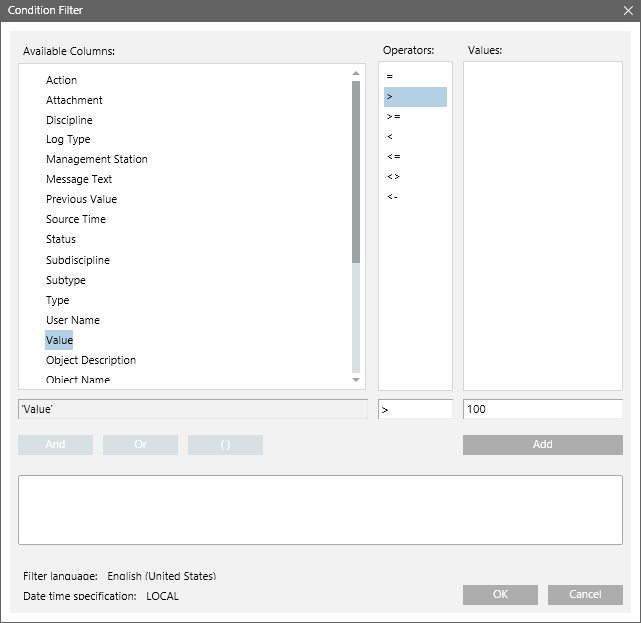
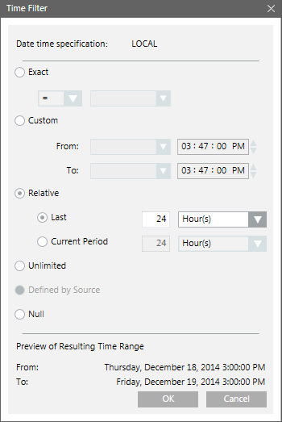

Configuring an Activities Report
Scenario: You want to create an activities report to determine the number of times the Present Value property of an Analog Input object has exceeded 100 in the last 24 hours.
- You have set the AL attribute for the Present Value property of the Analog Input object in the Properties expander in the Object Configurator.
- Ensure that a report with the Activities table with the following default set of columns— Source Time, Object Description, Object Designation, Action, Log Type, Previous Value, Value, Status, User Name, Management Station, Message Text, and Attachment is available
- (Optional) Add any extra columns to the table from the Select Columns dialog box. To display this dialog box, right-click the table and select Select Columns.
- Drag the analog input object whose value you want monitored, to the Activities table. This object acts as the name filter.
- Right-click the Activities table and select Filters > Condition Filter.
- The Condition Filter dialog box displays.
- Perform the following steps to apply the condition filter:
a. Select Value from the Available Columns list.
b. Select > from the Operators list.
c. Enter 100 in the Values text field.
d. Click Add. The expression displays in the Filter Expression field.
e. Click OK. - The Condition filter is added to the table.
NOTE: When you are creating a Condition filter, the syntax of the property values depends on the data type of the property.
For more information, see Condition Filter Syntax in Condition Filter. 
- Specify the time period by adding the Time filter to the report definition. Perform the following steps to add the Time filter.
a. Right-click the Activities table, point to Filters and select Time Filter. The Time Filter dialog box displays.
b. Select the Relative option.
c. Select the Last or Current Period option, depending on the data requirement for the last 24-hour period or current 24-hour period.
For more information regarding setting the time period, see Time Filter. In this example, since data is required for the last 24-hours, you must select Last and specify 24-hours.
d. Click OK. 
- Run the report to view the data.
- The report displays the data for analog input object where value is greater than 100 in the last 24-hours.
- (Optional) Click Save.